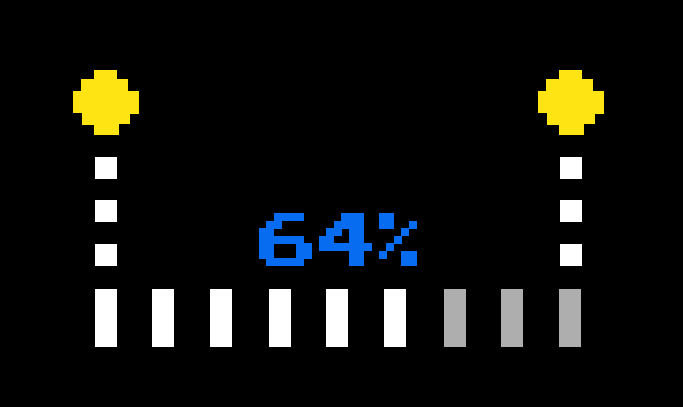

Need a simple way of loading audio files into a project that uses the Web Audio API? Abbey Load is just the thing.
Specify the names and paths of your audio files along with a function to call when you're done and ready to have the time of your life.
The best way to start using Abbey Load is to grab it from GitHub
Abbey Load relies on a couple of things, namely:
More documentation to come, but this will get you going in the meantime:
var assets = new AbbeyLoad( [{
'hello': 'hello.ogg',
'wat': 'wat.mp3'
}], function (buffers) {
// do something with ready to play buffers!
});
No problem, just give me a shout on Twitter.